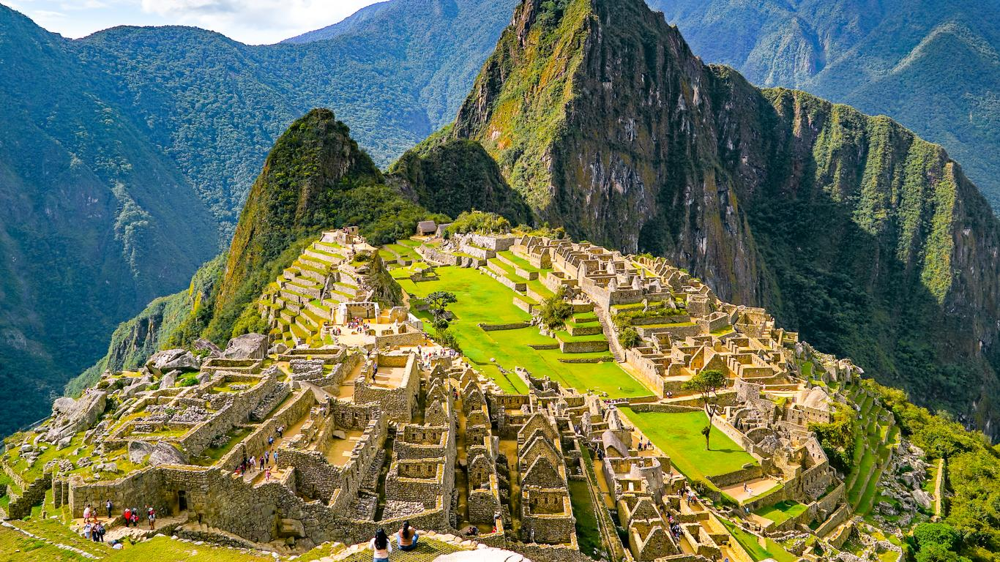

Machu Picchu (keczua Machu Pikchu, stary szczyt) – najlepiej zachowane miasto Inków, w odległości 112 km od Cuzco. Położone jest na wysokości 2090–2400 m n.p.m., na przełęczy między Huayna Picchu a Machu Picchu w peruwiańskich Andach. Poniżej płynie rzeka Urubamba. Miasto zbudowano w II połowie XV wieku podczas panowania jednego z najwybitniejszych władców Pachacuti Inca Yupanqui (1438–1471). Pełniło wówczas funkcję głównego centrum ceremonialnego, ale także gospodarczego i obronnego. Zamieszkiwali je kapłani, przedstawiciele inkaskiej arystokracji, żołnierze oraz opiekunowie tamtejszych świątyń. Miasto składało się z dwóch części. W górnej, zwanej hanman, znajdowały się: świątynia słońca, grobowiec królewski, pałac królewski oraz Intihuatana, największa inkaska świętość. W dolnej mieściły się domy mieszkalne kryte strzechą oraz warsztaty produkcyjne. Na stromych zboczach otaczających miasto były tarasy uprawne o szerokości od 2 do 4 m, z pionowymi ścianami między nimi wzniesionymi z kamieni.
| Linki(dowiedz się więcej) | Koloseum | Chichen Itza | Machu Picchu |
| -------- | Petra | Pomnik Chrystusa Odkupiciela | |
| -------- | Wielki mur chiński | Tadż mahal |